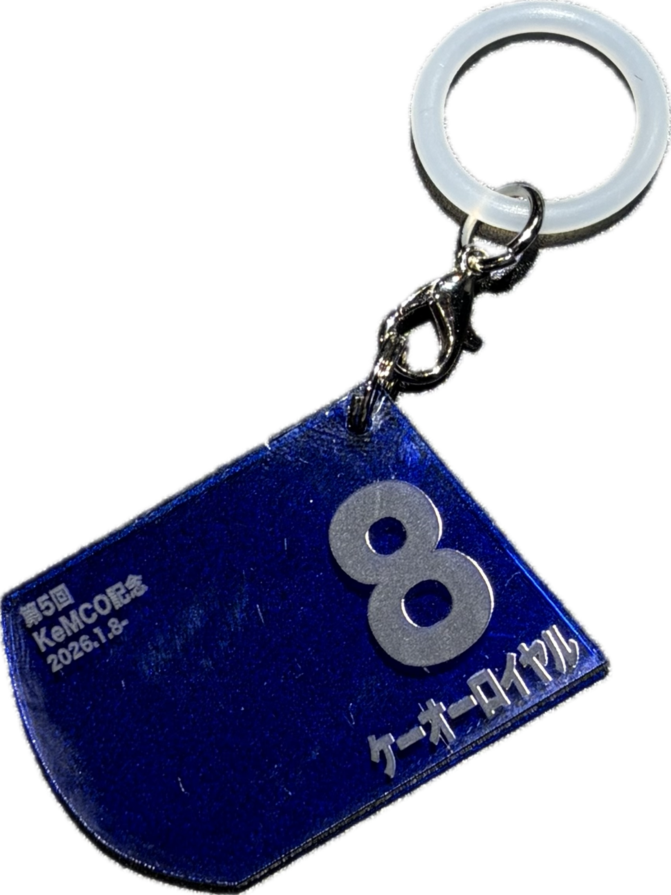
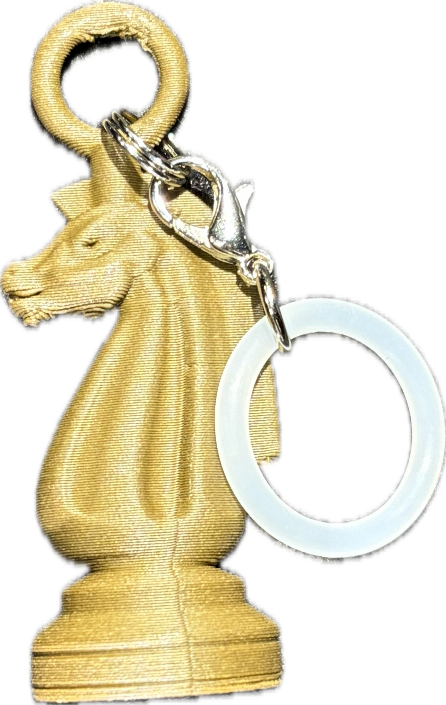

🐴 ガチャガチャ
出典一覧
このページは、2025新春展オリジナルガチャガチャに含まれる各アイテムとうまめ知識の出典情報をまとめたものです。
🎁 ガチャアイテムの出典 ▼
KeMCoMの書
制作者：
KeMCoM（書：2年 ゆうすけ）
制作年：
2025
KeMCo記念ゼッケン

制作者：
KeMCoM
制作年：
2025
馬具(杏葉)
作品名：
熊野神宮神宝図
制作者：
宇治田忠郷
制作年：
1794
所蔵：
斯道文庫
生物景観図集
作品名：
生物景観図集［荒俣宏旧蔵 博物誌コレクション］
制作者：
William Daniell
制作年：
1809
所蔵：
三田メディアセンター（慶應義塾図書館）
ラッキー蹄鉄
作品名：
Horse Shoe
制作者：
GetDeadEntertainment
所蔵：
Sketchfab（CC BY 4.0）
URL：
https://skfb.ly/6TXYo
※本コンテンツは当該3Dデータを利用して作成した。
慶應人参
制作者：
KemCoM
制作年：
2025
ナイト駒

作品名：
Black Horse Chess
制作者：
omarelone
所蔵：
Sketchfab（CC BY 4.0）
URL：
https://skfb.ly/o7uUM
※本コンテンツは当該3Dデータを利用して作成した。
古銅馬型
作品名：
古銅馬形水滴
制作年：
17世紀
所蔵：
ミュージアム・コモンズ
🐴 馬の豆知識の出典 ▼
うまめ知識制作にあたり参考にした、馬に関する豆知識・背景情報の出典です。
"視野が広い馬の目。どこまで見える？視力・色覚・距離感は？".HORSE FAIR.2023-05-12.
https://jodhpurs.jp/contents/blog/20230512-22969/
"馬は立ったまま眠る？犬や猫との寝方の違いと睡眠の秘密".GORON by ペット共生アドバンスネット.2025-8-28
https://goron.co/archives/15759
"馬をもっと知る".馬と人
http://umatohito.com/about_horse.html
"馬のひみつ 今回は馬の汗についてのおはなし！".エルミオーレ豊田.
https://www.elmeaure-toyota.com
"馬をもっと知る".馬と人
https://www.shepherd-clc.com/archives/1497
"「休題：馬の解剖：盲腸 ～大事な発酵槽～」".シェパードがおくる松本大策のサイト.2011-2-4
https://worldrecordcertification.com/ja/record/record-holders/life-and-health/3544/
"馬はなぜ「いななく」のか".CREATORS STATION.2024-01-09
https://www.creators-station.jp/report/creators-eye/211399
"馬、人の顔・声で心読む 北大チームが発表".日本経済新聞.2018-6-22.
https://www.nikkei.com/article/DGXMZO32100230S8A620C1CR0000/
(参照 2025-12-25)